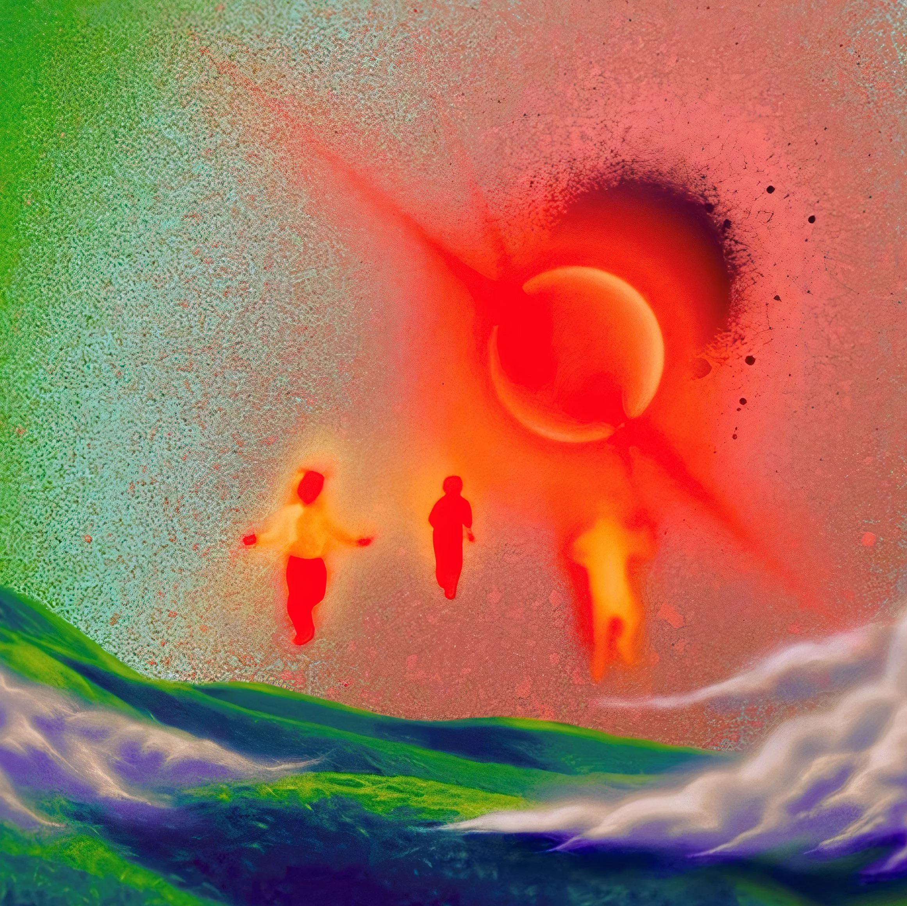
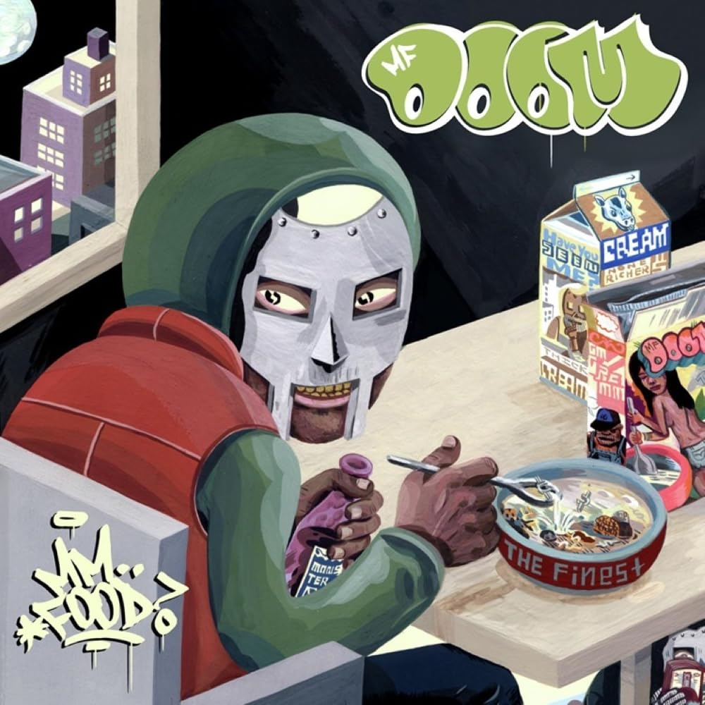
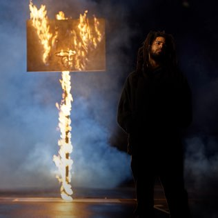

Donda
Kanye West
I guess this is the official Album

| Track No | Song Name | Duration |
|---|---|---|
| 1 | Donda Chant | 0:52 |
| 2 | Jail | 4:57 |
| 3 | God Breathed | 5:33 |
| 4 | Off the Grid | 5:39 |
| 5 | Hurricane | 4:03 |
| 6 | Praise God | 3:47 |
| 7 | Jonah | 3:15 |
| 8 | Ok Ok | 3:25 |
| 9 | Junya | 2:28 |
| 10 | Believe What I Say | 4:02 |
| 11 | 24 | 3:18 |
| 12 | Remote Control | 3:19 |
| 13 | Moon | 2:36 |
| 14 | Heaven and Hell | 2:25 |
| 15 | Donda (feat. Stalone & Tony Williams) | 2:08 |
| 16 | Keep My Spirit Alive | 3:41 |
| 17 | Jesus Lord | 8:59 |
| 18 | New Again | 3:03 |
| 19 | Tell the Vision | 3:40 |
| 20 | Lord I Need You | 2:42 |
| 21 | Pure Souls | 5:59 |
| 22 | Come to Life | 5:10 |
| 23 | No Child Left Behind | 2:58 |
| 24 | Jail Pt 2 | 4:57 |
| 25 | Ok Ok Pt 2 | 3:25 |
| 26 | Junya Pt 2 | 3:03 |
| 27 | Jesus Lord Pt 2 | 11:31 |
MM..FOOD
MF DOOM

| Track No | Song Name | Duration |
|---|---|---|
| 1 | Beef Rapp | 4:39 |
| 2 | Hoe Cakes | 3:46 |
| 3 | Potholderz (feat. Count Bass D) | 3:20 |
| 4 | One Beer | 2:27 |
| 5 | Deep Fried Frenz | 4:59 |
| 6 | Poo-Putt Platter | 1:13 |
| 7 | Fillet-O-Rapper | 1:03 |
| 8 | Gumbo | 0:49 |
| 9 | Fig Leaf Bi-Carbonate | 3:19 |
| 10 | Kon Karne | 2:51 |
| 11 | Guinnesses (feat. Angelika & 4ize) | 4:41 |
| 12 | Kon Queso | 4:00 |
| 13 | Rapp Snitch Knishes (feat. Mr. Fantastik) | 2:52 |
| 14 | Vomitspit | 2:39 |
| 15 | Kookies | 4:01 |
The Off-Season
J. Cole

| Track No | Song Name | Duration |
|---|---|---|
| 1 | 95 South | 3:16 |
| 2 | Amari | 2:29 |
| 3 | My Life (feat. 21 Savage & Morray) | 3:38 |
| 4 | Applying Pressure | 2:58 |
| 5 | Punchin' the Clock | 1:53 |
| 6 | 100 Mil' (feat. Bas) | 2:43 |
| 7 | Pride Is the Devil (feat. Lil Baby) | 3:38 |
| 8 | Let Go My Hand (feat. Bas & 6lack) | 4:26 |
| 9 | Interlude | 2:12 |
| 10 | The Climb Back | 5:05 |
| 11 | Close | 2:33 |
| 12 | Hunger on Hillside (feat. Bas) | 3:59 |